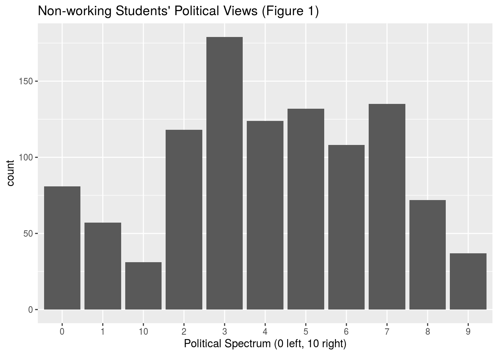
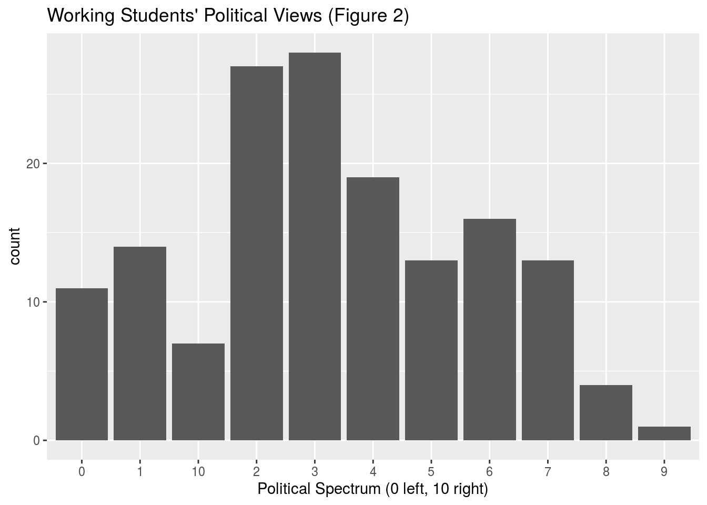
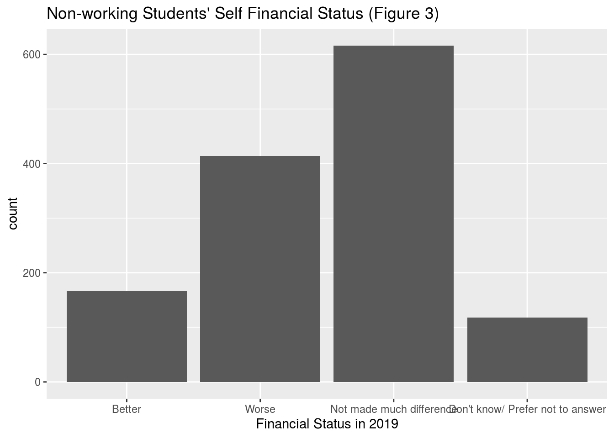
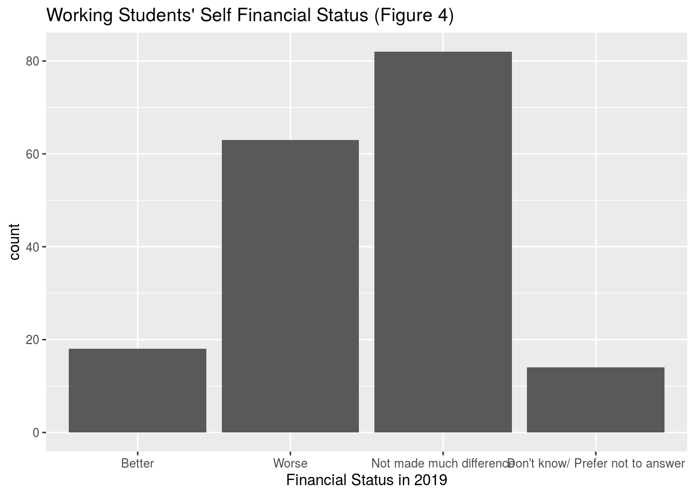
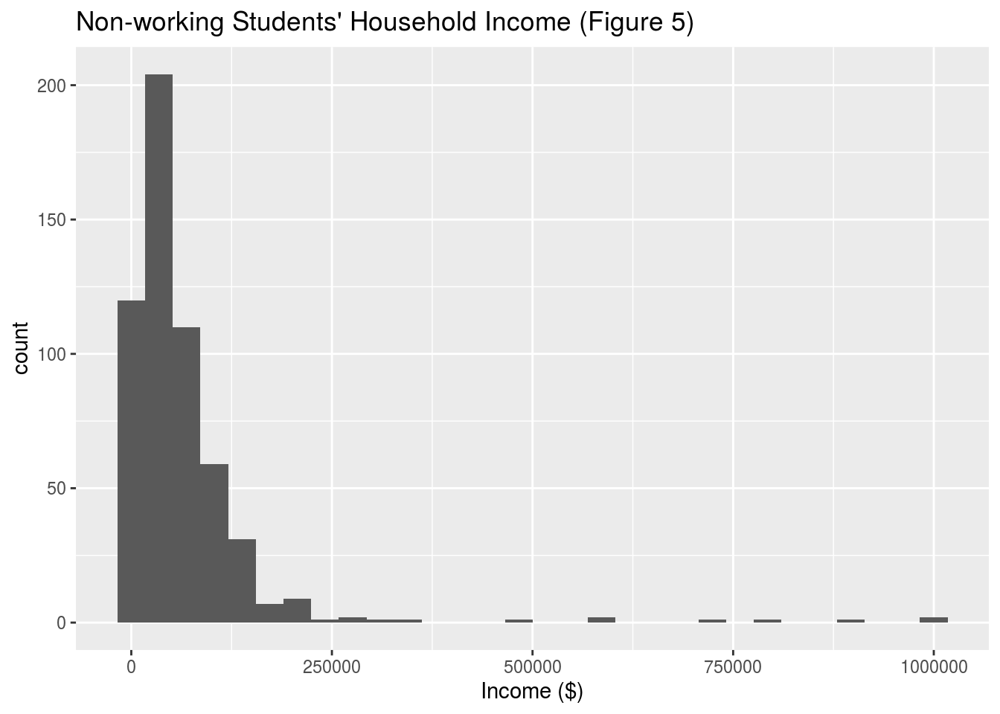
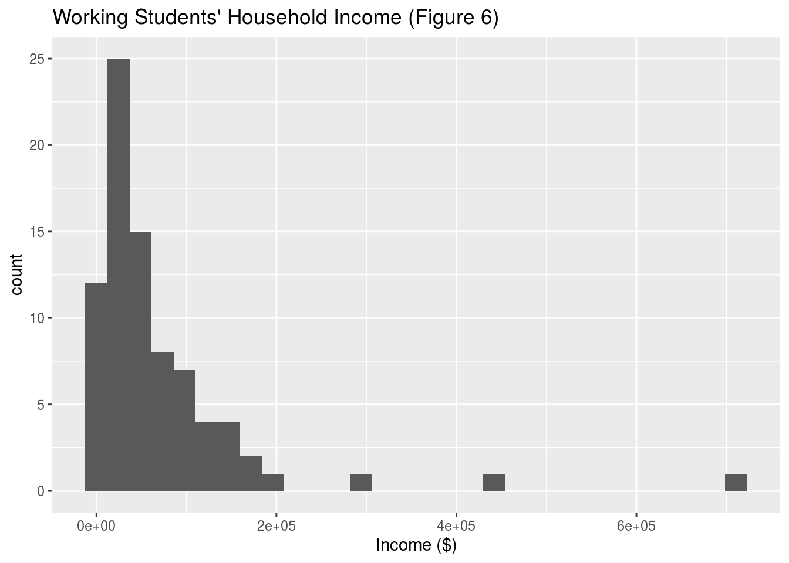

Abstract
The 2019 Canadian Election Study is the largest of its kind to be conducted and provides deep insights into multiple demographics of Canadian voters. In this study, we use the decon data set to explore the political opinions of students and how it may relate to their financial statuses. The intuition is that working students do so because they have less stable financial support and probably support policies that provide social support and our findings provide evidence that this may be the case. As students are only recently becoming the next generation of voters, an important next step may be to see how student voters are represented against other demographics.
Introduction
The Canadian Election Study released in 2019 is the largest study ever taken on a Canadian federal election with more than 40,000 surveys conducted. Through this data, we have access to matters of the public’s opinions and attitudes towards the Canadian political landscape and can use this to analyze the outcome of the election. One particular demographic that we are interested in is student voters who are typically younger and will make up the future generation of workers in Canadian society. Through a simplified data set that contains information about a voter’s education, financial outlook, and political preference, we aim to analyze the opinions of student voters and see what sort of policies they feel represent them the best.
The data set decon was used to retrieve data about student voters, especially political view point and financial situation. It contains the personal information of people in a wide range of demographics. In this case, we want to analyze the financial situation of students who don’t work versus students who do and how it may affect their political viewpoints. Typically, we would assume that students who work are likely to have less financial support from their family (thus the need to work) and will have political perspective that supports additional social assistance for students. Through our findings, we see that this is somewhat the case compared to students who do not work as a larger proportion of working students have left leaning political views and generally feel worse off financially.
This study will analyze the responses among working and non-working students for their opinions on their own financial standing, their political opinions, and their household income to ideally provide an insight into how their financial backing may affect their political opinion. After going through this data, we see that the evidence exists but it is hard to define a clear relationship among the variables due to their qualitative nature and the sampling representation of both groups of working and non-working students differ greatly which impact our conclusions. Future steps to take here include interpreting and analyzing the data from students from previous years as well as grouping students together as a whole to compare with another demographic.
We are using the packages tidyverse, blogdown, cesR, devtools which are all referenced below.

The variables we focus on are how working and non-working students rank themselves on the political spectrum. We see that working students are typically more left-aligned likely due to their support for social aid. On the other hand, many non-working students rank themselves more towards the center which should make sense as we have a much larger sample of non-working students and the broad nature of this demographic includes people of various backgrounds and opinions.

##
## Better Worse
## 166 414
## Not made much difference Don't know/ Prefer not to answer
## 616 118
##
## Better Worse
## 18 63
## Not made much difference Don't know/ Prefer not to answer
## 82 14In Figures 3 and 4, we can compare the proportion of working students and non-working students about their opinions on their personal financial standings in 2019. We see that there is a higher proportion of working students who feel that their financial standing is worse off compared to non-working students which is what we predicted in the first place. In the table of results, we see that the proportion of non-working students who feel worse off in their financial situation is 414/1314 = 0.315 whereas the proportion of working students who feel worse off is 63/177 = 0.356.
## `stat_bin()` using `bins = 30`. Pick better value with `binwidth`.
## employment income
## Student :553 Min. : 0
## Working for pay full-time : 0 1st Qu.: 20000
## Working for pay part-time : 0 Median : 44500
## Self employed (with or without employees): 0 Mean : 66082
## Retired : 0 3rd Qu.: 80000
## Unemployed/ looking for work : 0 Max. :1000000
## (Other) : 0## `stat_bin()` using `bins = 30`. Pick better value with `binwidth`.
## employment income
## Student and working for pay :81 Min. : 0
## Working for pay full-time : 0 1st Qu.: 22000
## Working for pay part-time : 0 Median : 40000
## Self employed (with or without employees): 0 Mean : 70608
## Retired : 0 3rd Qu.: 90000
## Unemployed/ looking for work : 0 Max. :710984
## (Other) : 0Both income distributions are right skewed because of outliers but between the household incomes of working students and non-working students, there exists more outliers for non-working students. This is most likely due to survey takers putting in their families’ household income which shows that non-working students may have better financial support from their families.
Discussion
We use the decon data set to retrieve information about the political opinions, household incomes, and financial standings of both working and non-working students in 2019. We found that the discrepancies in the comparisons provide slight evidence towards the our hypothesis claiming that non-working students generally have better financial support and thus would mainly have centered political viewpoints as they do not need the same social support that struggling students may need. All of the results were compared through the distribution of the responses visualized by bar graphs and histograms. These types of visualizations helped showcase some obvious trends in terms of responses for the 2 demographics which we used to derive evidence and support our analysis.
Weaknesses and next steps
One weakness that was prevalent in this study was the sample representation of working and non-working students as we have a lot more responses from non-working students. This leads to a potential under representation of the responses from working students which may impact the evidence we find and our ultimate conclusions in the end. Another weakness was the lack of study of direct relationships between variables due to most variables being qualitative in nature. Ideally, we would’ve wanted to analyze 2 variables (in this case financial standing and political opinion) using a scatter plot and perhaps applying a linear regression model to study the strength in correlation to help explain our findings. A potential next step should be to include data and findings from the Canadian Election Study from previous years to compare the financial standings and political opinions of students in the past compared to those of 2019. There is more work to be done to interpret the CES web and phone data to find the student demographics and their opinions and attitudes.
Host
R markdown file for this post can be found at https://github.com/ytz1211/STA304_website
Specifically https://github.com/ytz1211/STA304_website/tree/master/content/post
References
- Stephenson, Laura B; Harell, Allison; Rubenson, Daniel; Loewen, Peter John, 2020, ‘2019 Canadian Election Study - Online Survey’, https://doi.org/10.7910/DVN/DUS88V, Harvard Dataverse, V1
- Paul A. Hodgetts and Rohan Alexander (2020). cesR: Access the CES Datasets a Little Easier.. R package version 0.1.0.
- Hadley Wickham, Jim Hester and Winston Chang (2020). devtools: Tools to Make Developing R Packages Easier. https://devtools.r-lib.org/,https://github.com/r-lib/devtools.
- R Core Team (2020). R: A language and environment for statistical computing. R, Foundation for Statistical Computing, Vienna, Austria. URL, https://www.R-project.org/.
- JJ Allaire and Yihui Xie and Jonathan McPherson and Javier Luraschi and Kevin Ushey and Aron Atkins and Hadley Wickham and Joe Cheng and Winston Chang and Richard Iannone (2020). rmarkdown: Dynamic Documents for R. R package version 2.3. URL https://rmarkdown.rstudio.com.
- Wickham et al., (2019). Welcome to the tidyverse. Journal of Open Source Software, 4(43), 1686, https://doi.org/10.21105/joss.01686
- Yihui Xie (2020). blogdown: Create Blogs and Websites with R Markdown. R package version 0.20.
- Yihui Xie, Alison Presmanes Hill, and Amber Thomas (2017). blogdown: Creating Websites with R Markdown. Chapman and Hall/CRC. ISBN 978-0815363729